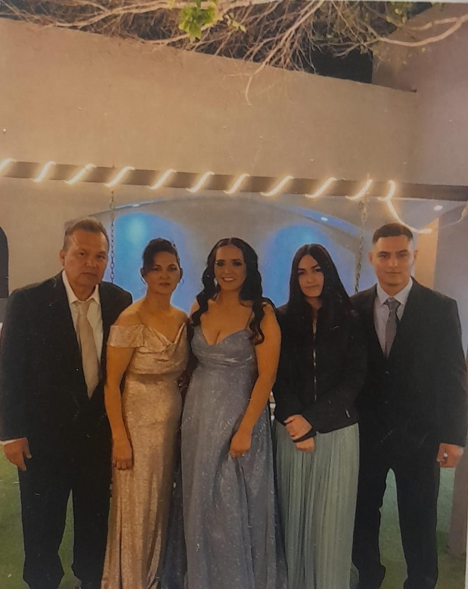
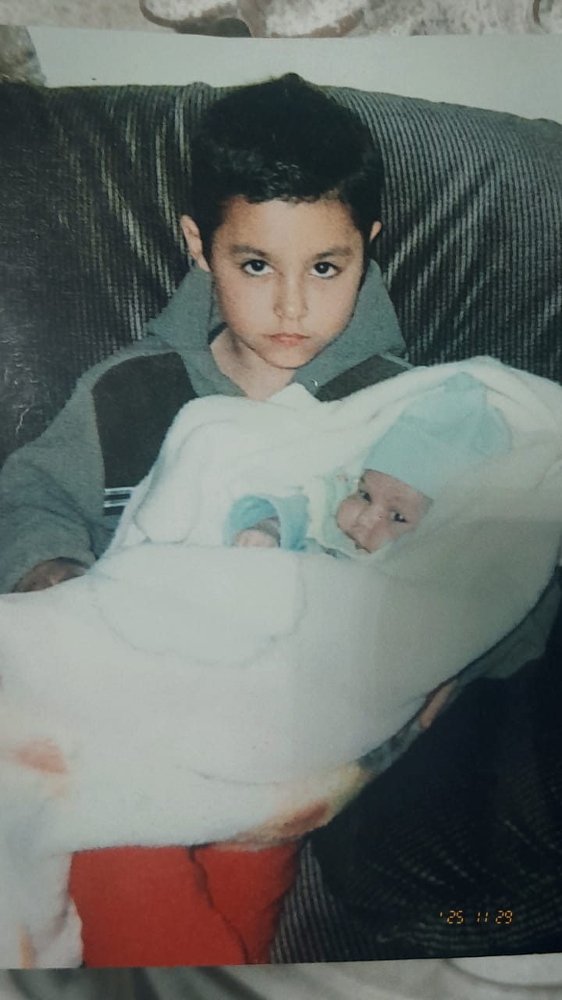
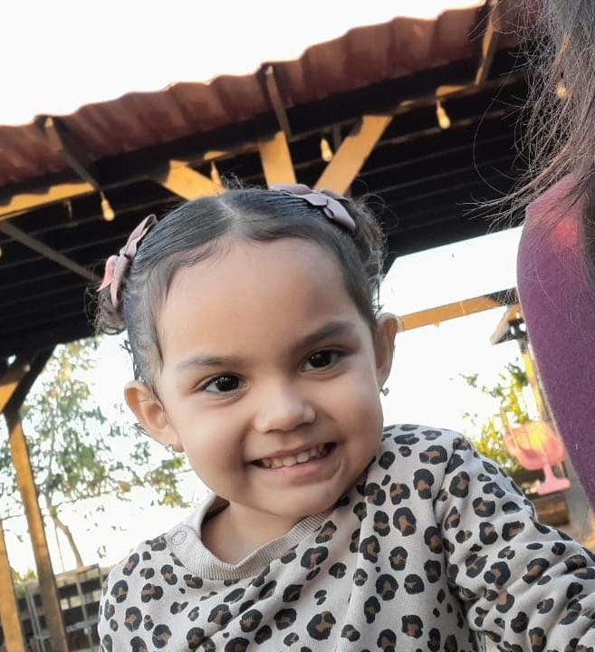

mi mami y mi apa se conocieron en el trabajo, mi apa dice que en cuanto miro a mi mami se enamoro de ella, asi que durante 1 año mi apa le mandaba regalos, mi mami no sabia quien era, solo le decian que tenia un admirador secreto, mi mami no le hizo tanto caso y no aceptaba los regalos pero aun asi se los daban, asi paso, hasta que en una fiesta del trabajo, mi apa le dijo a mi mami que le gustaba, que si le daba una oportunidad, a lo cual mi mami despues de pensarlo durante unos dias le dijo que si. anduvieron de novios 2 años hasta que se casaron y al año siguiende de casados mi mami tuvo a mi hermano y 8 años despues me tuvieron a mi, yo fui sorpresa.

Mi Hermano se llama Martin tiene 26 años el fue quien eligio mi nombre 'Diana' ya que a el le gustaba mucho, yo naci cuando el tenia 8 añitos. conocio a su esposa cuando estaba en el cobach vasconcelos y ya tienen 10 años juntos. yo amo a mi hermano mas que a nadie, ya que lo miro como si fuera mi papa, aunque es bien enfadoso.

Ella es Cielo, nacio un 7 de junio de 2022, cuando yo tenia 14 años, la amo mucho, aunque es bien enojona y enfadosa y desgraciadamente nos parecemos en el caracter haciendo que siempre choquemos, pero aun asi la amo.